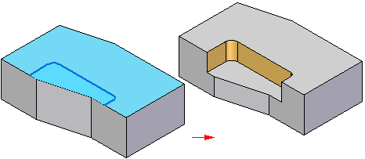
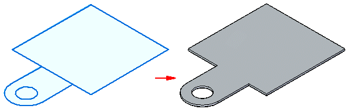
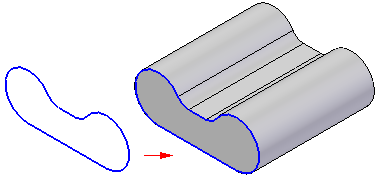
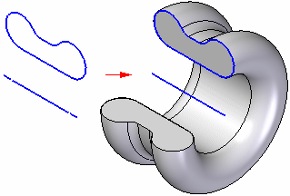
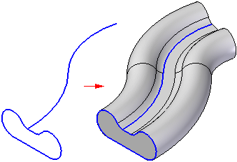
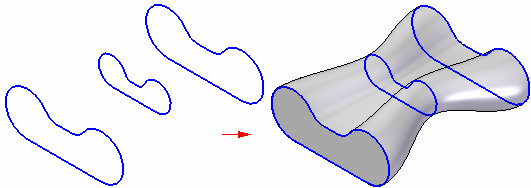
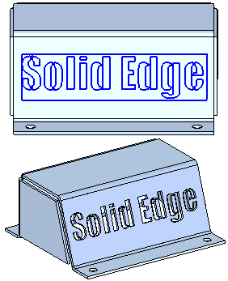

Using part sketches
Sketches are used to create synchronous and ordered solid and sheet metal parts and features.
-
You draw sketches to define the basic shapes when creating part features. Each feature will then add or remove material to define the complete part.
Example:This solid part with a cutout was created from two sketches:


Example:This sheet metal part was extruded, and material removed from it, using three sketches.

-
You can extrude or revolve a sketch or use a set of sketches to define more complex features. Some feature types, such as sweeps or ribs, require more than a single sketch.
Example:You can use the sketch-based feature commands to add material by:
-
extruding sketch elements along a linear path,

-
revolving sketch elements about an axis,

-
sweeping sketch elements along a user-defined path,

-
or fitting through a series of sketch elements.

-
-
You can place text as sketch geometry on parts using the Text Profile command. For more information, see Placing text as sketch geometry.
Example:
Types of part sketches
In Solid Edge, there are ordered sketches and synchronous sketches. Ordered sketches are used to create history-based parts and features, and synchronous sketches are used to create synchronous parts and features. Synchronous parts are not history-based, so you can edit the model directly using the steering wheel tool.
The type of sketch that is created is based on the environment you are in when you create the sketch.
For more information, see Synchronous and ordered sketches.